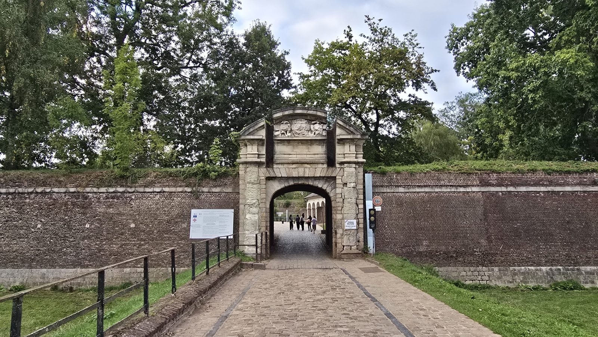
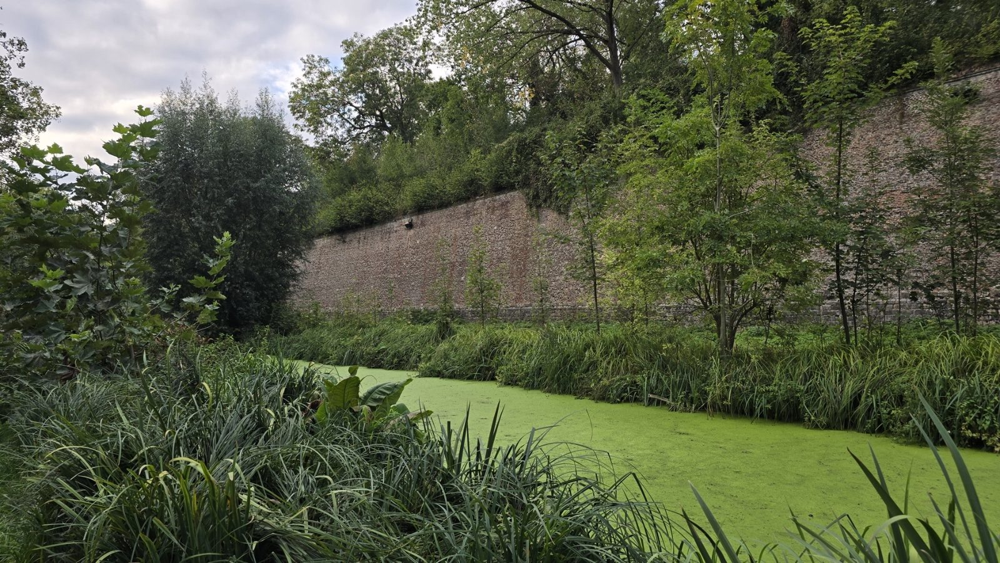

Places to see in Lille
Lille is an easy city to walk. Most of what you'll want to see sits within half an hour on foot. Here are the places to visit, from the best known to the quietest.
Where to go
Vieux-Lille and the Grand'Place
You start here, inevitably. The Grand'Place, officially place du Général-de-Gaulle, with the Vieille Bourse and its arcades. Then the cobbled lanes of rue de la Monnaie, lined with seventeenth-century gabled houses. It's the best-looking part of the city in photographs, and the best place to walk with no particular plan.

The Belfry of the Town Hall
At 104 metres it's the tallest belfry in the region. From the top you see brick rooftops in every direction and, on a clear day, as far as Belgium. You can only go up on a guided visit at set times. Check the day's schedule when you get there, it changes often.
The Palais des Beaux-Arts
One of the largest museums in France after Paris. Rubens, Goya, the Impressionists, and a collection of scale models of fortified towns you won't find anywhere else. Allow an hour and a half if you don't want to rush.
The Citadelle and its park
Vauban's star-shaped fortress dates from the seventeenth century. The army still occupies it, so only part is open to visitors. The park around it is open all year, though. It's the largest green space in the city, good for a walk or a picnic, and there's a zoo right next to it, not free but cheap, closed on Tuesdays and in winter.


Notre-Dame-de-la-Treille cathedral
A cathedral that catches you off guard. Its translucent marble front was only finished in 1999, after more than a century of building work, and it lets a very particular light into the nave. It makes an odd contrast with the classical façades of Vieux-Lille next door.
Practical notes
- Getting around
- Everything is walkable from the centre. The metro (lines 1 and 2) helps for the far ends
- Budget
- The streets and parks are free. Allow an entry fee for the Palais des Beaux-Arts and for going up the Belfry
- Best time
- Early morning in Vieux-Lille, especially at weekends